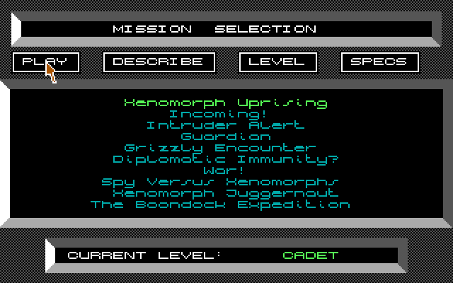
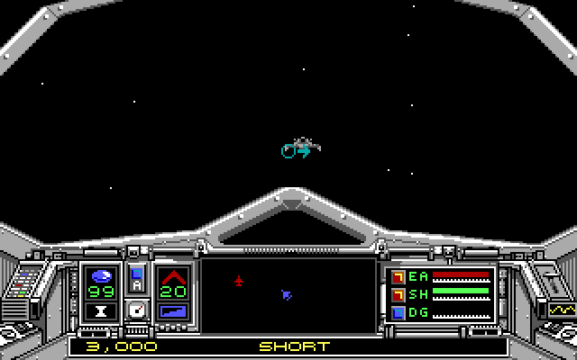

名稱：火狐狸2 (Skyfox II: The Cygnus Conflict，英文版)
簡介：Dynamix 1987年出品的太空戰鬥模擬遊戲，1998年移植到DOS，由EA代理發行，台灣由
智冠與精訊代理進口 [待補]。


備註：本版為EGA版（智冠代理銷售版為CGA版）
保護：無
操作：遊戲不支援滑鼠，只能使用鍵盤操控。
上下左右 = 移動／變更方向
0～9 = 變更飛行速度，由慢到快（0為停止）
Alt = 選擇／飛離太空站／發射中子爆裂彈
Space = 發射中子脈衝炸彈
M = 投擲反物質機雷
S = 護盾開關
A = 自動導航開關
Del = 隱形器開關
D = 停泊到太空站
R = 在太空站內修護
L = 顯示位置
T = 截取通訊
O = 顯示銀河星圖
F1 = 切換瞄準方式
F3 = 切換成長程掃瞄範圍
F5 = 切換成中程掃瞄範圍
F7 = 切換成短程掃瞄範圍
P = 暫停遊戲
Ctrl-R = 結束目前任務，返回待命室
Ctrl-M = 引擎聲音開關
Ctrl-S = 音效開關